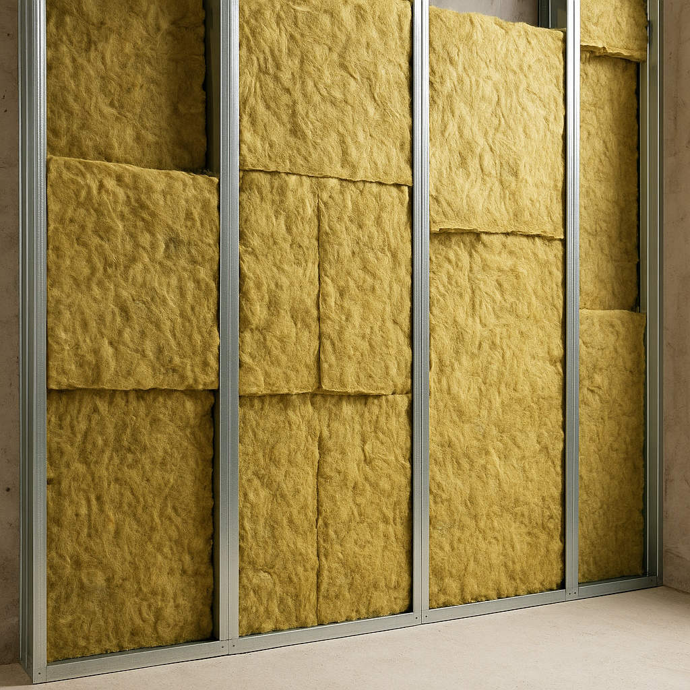
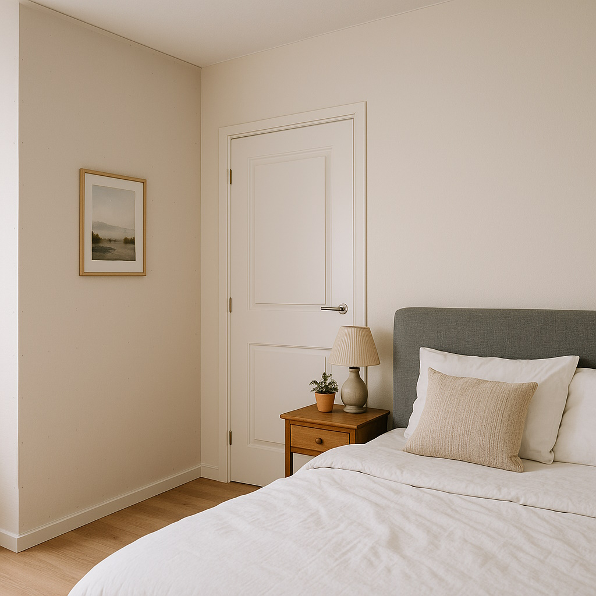

Schallschutz im Innenausbau: Wie man mit Trockenbau mehr Ruhe in die Wohnung bringt
Lärm von Kindern, Musik oder Arbeiten im Homeoffice – in vielen Wohnungen sind Geräusche aus dem Nebenraum ein Dauerthema. Mit richtig geplantem Trockenbau kann man den Schallschutz deutlich verbessern. Entscheidend ist nicht nur „eine Wand mehr“, sondern der Aufbau im Detail.

1. Wie Schall sich in Gebäuden ausbreitet
Bei der Planung von Schallschutz hilft ein einfaches Bild: Schall ist nichts anderes als Schwingung, die sich durch Luft und Bauteile fortsetzt. Im Innenausbau unterscheiden wir grob:
- Luftschall: Sprache, Musik, Fernseher – Schall bewegt sich durch die Luft und regt Wände und Decken zum Schwingen an.
- Körperschall: Schritte, Stühlerücken, Bohren – Schwingungen laufen direkt durch die Konstruktion (Beton, Mauerwerk, Profile).
Eine gute Trockenbauwand soll also zwei Dinge tun: Schwingungen dämpfen und den Luftschall daran hindern, einfach „durchzupfeifen“.
2. Was eine Trockenbauwand schalldämmend macht
Der Schallschutz einer Trockenbauwand hängt von mehreren Bausteinen ab, die zusammenspielen:
- Masse: Mehr und schwerere Platten bedeuten in der Regel bessere Dämpfung.
- Entkopplung: Wenn die beiden Wandseiten konstruktiv getrennt sind, überträgt sich weniger Schwingung.
- Dämmung im Hohlraum: Mineralwolle reduziert die Schallenergie im Zwischenraum.
- Dichte Anschlüsse: Undichte Fugen oder Steckdosen ohne Schallschutzkasten können den Effekt stark verschlechtern.
Eine einfache, einlagige Trockenbauwand mit einem Ständerwerk erreicht deutlich weniger als ein sorgfältig geplanter Schallschutzaufbau – auch wenn beide „gleich aussehen“.
3. Typische Schallschutz-Aufbauten im Trockenbau
Je nach Anforderung setzen wir im Innenausbau unterschiedliche Aufbauten ein. Drei Beispiele aus der Praxis:
3.1 Standard-Innenwand mit verbessertem Schallschutz
- ein Metallständerwerk (CW/UW-Profile)
- beidseitig zweilagige Beplankung mit Gipskartonplatten
- Mineralwolldämmung im Ständerfeld
Dieser Aufbau ist für viele Trennwände in Wohnungen ausreichend und bringt einen deutlich spürbaren Unterschied zu einfachen, einlagigen Wänden.
3.2 Doppelständerwand bei hohen Anforderungen
- zwei getrennte Ständerwerke, dazwischen ein Abstand
- beidseitig jeweils doppelte Beplankung
- Dämmung in beiden Rahmenfeldern
Durch die Trennung der Ständerwerke werden Schwingungen schlechter übertragen. Solche Wände eignen sich für Schlafzimmer neben lauten Räumen oder bei Büros, in denen telefoniert oder aufgenommen wird.
3.3 Vorsatzschale vor einer bestehenden Wand
Wenn eine massive Wand zu „hellhörig“ ist, kann eine entkoppelte Vorsatzschale helfen:
- Metallständerwerk vor die bestehende Wand gesetzt
- Dämmung im Hohlraum, keine starre Verbindung zur Wand
- zweilagige Beplankung auf der Raumseite
So entsteht aus einer einfachen Wand ein mehrschichtiger Aufbau mit deutlich besseren Werten – wichtig ist eine sorgfältige Ausführung ohne starre Kurzschlüsse.
4. Schwachstellen, die wir immer wieder sehen
In der Praxis steht und fällt der Schallschutz mit Details. Häufige Problemstellen sind:
- Fugen und Anschlüsse: nicht sauber verspachtelte Fugen, offene Spalten an Decke oder Boden.
- Steckdosen: Rücken-an-Rücken-Dosen ohne Schallschutzbox sind akustische „Löcher“ in der Wand.
- Durchgehende Profile: wenn Profile hart an angrenzende Bauteile angeschlossen sind, übertragen sie Schwingungen.
- Flankierende Übertragung: Geräusche laufen um die Wand herum über Decke oder Estrich – hier sind oft zusätzliche Massnahmen nötig.
Gute Planung bedeutet daher auch, diese Schwachstellen mitzudenken, bevor die erste Platte verschraubt wird.
5. Was im bewohnten Objekt besonders wichtig ist
Wenn in einer bewohnten Wohnung nachträglich Schallschutz verbessert werden soll, kommen ein paar Punkte dazu:
- Saubere Baustelle: Staubschutz, Abdeckungen und möglichst wenig Lärm während der Arbeiten.
- Abstimmung mit Nachbarn: klare Arbeitszeiten und kurze Bauzeit vermeiden Diskussionen im Haus.
- Schnelle Wiederherstellung: Wände, die nach wenigen Tagen wieder streich- oder tapezierfertig sind.
Gerade hier spielt Trockenbau seine Stärken aus: Es entsteht wenig Baufeuchtigkeit, und die Räume sind zügig wieder nutzbar.
6. Wann lohnt sich eine Schallschutzmassnahme?
Nicht jede störende Situation braucht eine „Luxuslösung“. Oft hilft schon eine gezielte Wand, um einen Bereich akustisch zu trennen – zum Beispiel ein Büro von einem Wohnraum oder ein Schlafzimmer von einem Hobbybereich.
In anderen Fällen – etwa bei sehr hellhörigen Altbauten – sind Kombinationen aus Trockenbauwänden, Vorsatzschalen und Boden-/Decken- massnahmen sinnvoll. Hier lohnt sich eine Besichtigung vor Ort, um die Ursache einzugrenzen.